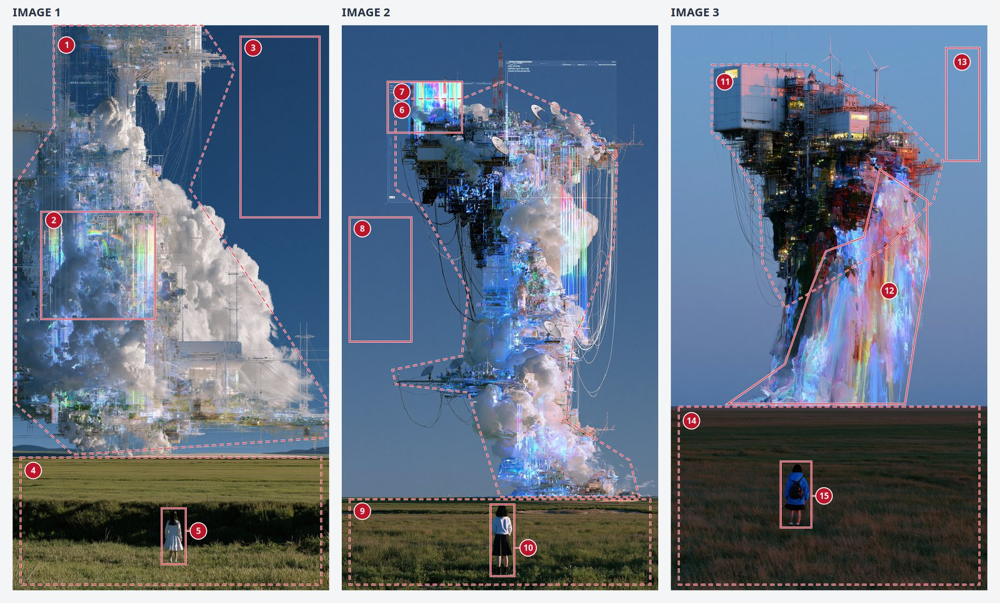

草原背身人物与异常巨构（三联图）
一个普通人站在仍然熟悉的世界里，面对无法解释的巨大结构：以现实草原参照、悬殊尺度差与定向局部异化构建敬畏与静默。
三联同系列对比 · 15 处原图标注第一章：设计总览
CHAPTER ONE · 12 SPEC ITEMS (F-01 — F-12)- F-01TYPE
设计类型
三张均是以草原、背身人物和异常巨型建筑为主题的竖版叙事图像。
- F-02STYLE
风格
以超现实科幻为主，融合工业设备、摄影质感和数字故障的视觉表现。
- F-03MOOD
第一印象
巨构与人物的悬殊尺度形成敬畏感，平静草原又让这种异常显得安静而陌生。
- F-04GRAMMAR
视觉语言
反复使用密集脚手架、悬垂线缆、发光碎片，以及实体向云雾或彩色流体转化的边界。
- F-05LAYOUT
布局构图
天空承担留白，巨构占据上部，草原与小人物构成下部的现实参照。
- F-06HIERARCHY
视觉层级
巨构的亮部吸引视线，人物提供尺度，细小设备则延长观看时间。
- F-07COLOR
色彩系统
蓝色天空与暗绿棕草地形成底色，青蓝虹彩、白云和暖色灯光集中在异常主体上。
- F-08TYPEFACE
文字排印
图一、图二有细小界面字样作为技术肌理，三图都没有主导画面的标题或正文。
- F-09SURFACE
形状与材质
硬质建筑与细线骨架交错，并与柔软云团或流动的虹彩表面形成反差。
- F-10GRAPHICS
图像与装饰
人物和草原保留生活化外观，技术框线与彩色碎片集中强化远处的奇观。
- F-11MOTION
动态线索
垂线、云团和瀑布状纹理暗示运动方向，但静态图片不能确认实际动画。
- F-12TAKEAWAY
学习重点
最值得借用的是现实参照、悬殊尺度，以及有方向和层次的局部异化。
第二章：完整设计分析
CHAPTER TWO · 7 ANALYTICAL MODULES这组三联图共享同一叙事母题：“一个普通人站在仍然熟悉的世界里，仰望无法解释的巨大结构。”画面稳定由三层要素咬合而成——横向延伸的现实草原、尺度极小的背身人物，以及兼具工业箱体、通信装置与非实体异化边界的巨构。
三种最强第一印象均有直接视觉支点：敬畏源于人物身高仅占画高约一成、而巨构覆盖整片天际甚至溢顶出框的悬殊尺度；陌生源于可辨认的钢架、风电与卫星碟无缝渗入云团或虹彩流体；静默源于人物背身凝视、草地低噪空旷，没有戏剧冲突或杂乱叙事打断视线。

| 编号 | 组件名称 | 所属区域 | 作用 | 可见特征 |
|---|---|---|---|---|
| 01 | 云化巨构 | 图一主体 | 建立巨大尺度 | 碎片建筑与白云穿插，上端超出画面形成延伸感 |
| 02 | 虹彩碎片样本 | 区域 1 内部 | 提供局部异常 | 竖向色带、青蓝亮点与云团叠合 |
| 03 | 天空留白样本 | 图一背景 | 衬托复杂边界 | 深蓝底色 #1F436B，细节极稀少 |
| 04 | 草原前景 | 图一前景 | 建立现实空间 | 草地横向延伸，地面线距顶约 76% |
| 05 | 背身人物 | 区域 4 内部 | 尺度与视点锚 | 浅色裙装，近画面中轴 |
| 06 | 通信巨构 | 图二主体 | 强化设备系统感 | 平台、卫星碟、密集骨架与云柱组合 |
| 07 | 界面与色带 | 区域 6 上部 | 叠合信息层纹理 | 细框线、微型字样与高亮彩色竖条 |
| 08 | 天空留白样本 | 图二背景 | 轮廓阅读空间 | 中深蓝 #315682 与悬垂线缆形成反差 |
| 09 | 草原前景 | 图二前景 | 压缩低地平线 | 地面线距顶约 84%，给巨构最大纵向空间 |
| 10 | 背身人物 | 区域 9 内部 | 引导观看远方 | 白上衣黑裙，近中轴背身站立 |
| 11 | 工业建筑实体 | 图三主体上部 | 提供可辨认重量 | 大块箱体、钢架、暖黄亮窗与顶部风机 |
| 12 | 虹彩瀑布 | 图三主体下部 | 实体向流体转换 | 宽幅下落纹理，青蓝与粉橙交织 |
| 13 | 天空留白样本 | 图三背景 | 衬托暗色体块 | 较浅暮色蓝 #6E98C5，背景简洁 |
| 14 | 暗草前景 | 图三前景 | 强化黄昏静默 | 暗草地 #2B2922 占比更大（约 33%） |
| 15 | 背身人物 | 区域 14 内部 | 加入行旅叙事 | 蓝色外套与背包，位置偏左 |
STYLE · 风格与流派
视觉关联上接近超现实取向与科幻概念艺术（巨构题材），图二带有局部赛博朋克通信设备元素；不做未经证实的作者流派归属。
TECHNIQUE · 视觉技法
数字故障（条带、错位、界面框）与虹彩多光谱表面均严格收缩在巨构局部，靠摄影级草叶与工业铁架做现实锚点。
MOOD · 情绪氛围
小人物、悬殊巨构与低噪空旷草原共同产生敬畏、疏离与安静凝视的情绪体验。
推荐检索组合：surreal sci-fi megastructure prairie lone figure · glitch architecture clouds cables · industrial structure iridescent waterfall dusk
重力线索与悬浮张力：重型箱体与自然下垂的线缆不断暗示重力存在，但巨构底部却缺乏常规支撑柱，这种物理矛盾制造出无声的失衡感。
定向异化优于全局滤镜：三张图分别给出了三种可执行的异常组织路径——图一是边界渗透（建筑溶入云团），图二是信号附着（卫星碟、线缆与细薄界面框），图三是竖向相变（上部暗箱→下部虹彩瀑布），远比笼统地“加故障特效”更有层次感。同时须兼顾远看大剪影清晰与近看设备肌理可辨。
创作一张接近 9:16 的竖版科幻叙事插画，核心情景是一个背身的人站在空旷草原上，仰望巨大而无法解释的人造结构。 【继承参考】草叶、衣物、箱形建筑、钢架和设备具有可信的摄影质感；人物很小，巨构占据上方大部分空间；天空保持低细节，异常虹彩集中在巨构上；建筑包含完整实体、密集内部骨架和逐渐失去稳定边界的部分。 【本次调整】采用图三式的“上部实体、下部溶解”关系：上端由浅灰箱体、细钢架、少量天线和风机构成，内腔较暗，窗口透出暖黄光；从中部右侧向下转化成青蓝、粉橙及少量淡绿交织的宽幅虹彩流，保留可辨认的明暗体积与细小碎片。草原约占下方三分之一，人物位于偏左的下部，身高约占画面一成。 【新增建议】天空采用较浅的暮色蓝，草地采用暗棕绿；建筑边缘受柔和橙红侧光照亮，彩色流的亮部略高于窗光；人物穿蓝色外套并背小包。若加入细小技术字样，仅作为设备附近的次级纹理，框线轻薄且远小于建筑模块。 【验收标准】缩略图中可辨认背身人物、完整建筑体块和向下展开的彩色流；放大后能辨认脚手架、线缆和草叶；天空明显比巨构简洁；局部虹彩与稳定实体之间存在清楚转换；人物、草地与建筑受光方向一致。